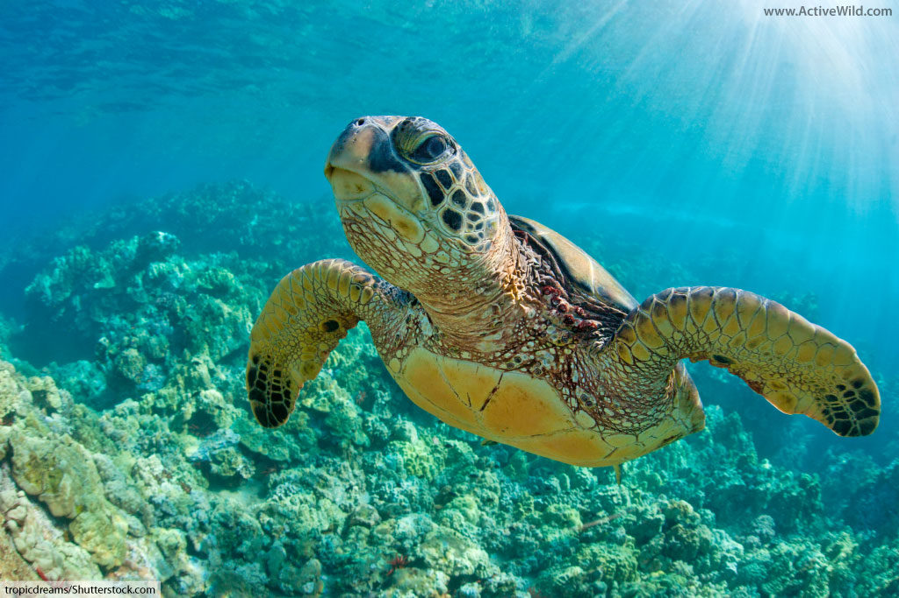
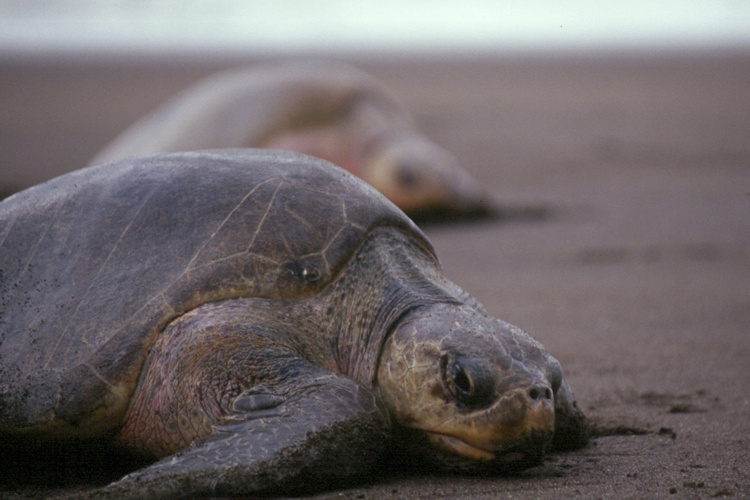
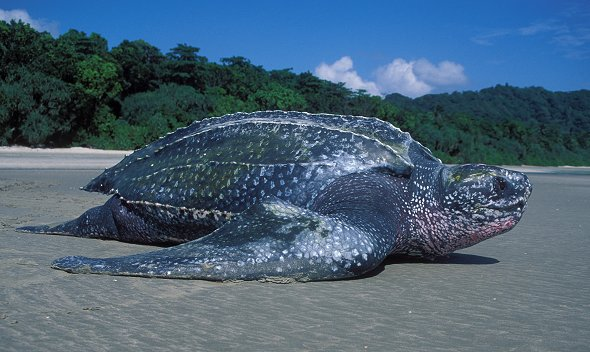
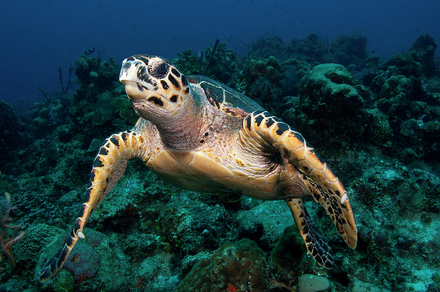
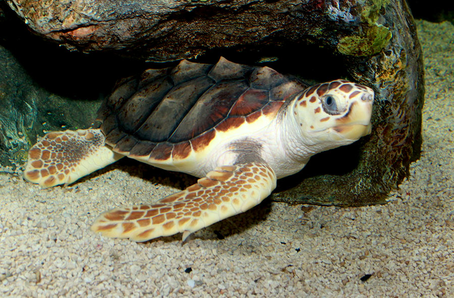

Green turtles have an average length of 1 metre and can weigh up to 230 kg. They are migratory and can be found in all tropical and sub-tropical seas such as the Indian, Atlantic, Caribbean and Pacific Oceans.Young green turtles are mainly carnivorous. The adults however are herbivorous, feeding only on marine vegetation such as sea grass and marine algae. Green turtles are considered as ‘’Endangered’’ species today.
The Olive Ridley turtle is the smallest of the marine turtles. The adults weigh less than 40 kg and measure up to 65 Cm in length. They are found mostly in the tropical Indian, south Atlantic and Pacific Oceans. They are omnivorous, eating crustacean, fish and some marine vegetation. In India, 600,000 Olive Ridley turtles have been recorded nesting on the same beach over a period of a few weeks. Despite the apparently large populations Olive Ridley turtles are endangered. This is because so many individuals of this species depend on the security of a small number of important beaches for nesting.
Of all the sea turtles, the leatherback is the biggest. They typically weigh around 600 kg and can grow to lengths of more over 2 meters. They have a dorsal black color that predominates, with varying amounts of white or lighter dotting. On the neck, spots may be pinkish. In search of their prey, leatherbacks would travel great distances. They only consume jellyfish. The Leatherback turtle can live in the extreme cold because, unlike other turtles, it can control its own body temperature because layers of fatty tissue insulate its body. Their distinctive carapace is what gives them the English name "Leatherback." Leatherback turtles are capable of deep diving.
The adults of hawksbill turtles, which typically weigh around 60 kg and reach lengths of up to 90 cm, are also quite small. They are largely carnivorous and live in tropical coastal waters near coral reefs. They eat a wide range of creatures, such as jellyfish, sponges, and crabs. The English name "hawksbill turtle" refers to the creature's tiny, bird-like beak, which it employs to snare prey that is lurking in small cracks. Hawksbill turtles occasionally consume poisonous sponges. Hawksbills can really store the toxins in their own body rather than getting poisoned.
Loggerhead turtles can weigh up to 180 kg and reach lengths of 1 meter. This species builds its eggs on beaches in both tropical and temperate regions, including the Mediterranean and the South East coast of the United States. Despite being one of the most widespread species in the globe, this species is the least prevalent nesting species in Sri Lanka. It is crucial to take prompt conservation action to safeguard the Loggerhead turtles in Sri Lanka since they are indigenous to the Indian subcontinent, only lay their eggs there, and have distinctive coloration that suggests a distinct population with unique DNA. Loggerhead turtles eat mostly crustaceans and mollusks because they are carnivorous. The term "loggerhead" describes a huge head that fits a large, muscular set.
| Name | Size | What they eat | Location | Special Features |
| Green Turtle | 1m in length and weigh 230kg | marine vegetation | lives in India, Atlantic, Caribbean and pacific oceans | having green colour all over their body |
| Olive Ridley | 65cm in length and weighs 40kg | Crustacean, fish and marine vegetation | lives in India, South atlantic and Pacific oceans | Smallest marine turtle |
| Leatherback | 2m in length and wighs 600kg | Jelly fish | lives in Eastern and Western Pacific and atlantic oceans | Largest marine turtles |
| Hawksbill | 90cm in length and weighs 60kg | jellyfish, sponges, crabs | lives in India, Atlantic and pacific oceans | They can store poison in their body |
| Loggerhead | 1m in length and weigh 180kg | crustacean, mollusks | Mediterranean and south east coast of United States | having a large head compare to the body |
| Summary |